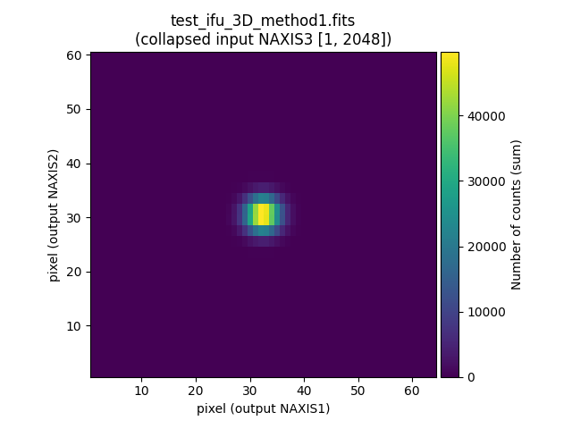
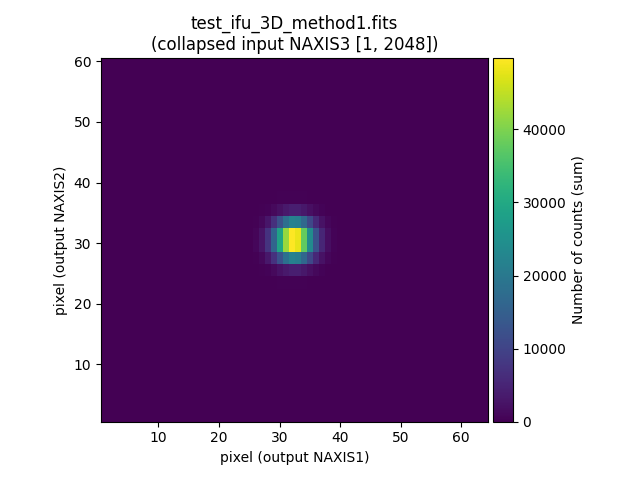

Initial example
Warning
The first time you execute fridadrp-ifu_simulator the output in
the terminal will show that some auxiliary files are downloaded and stored
in a cache directory. You don’t need to be concerned about the specific
location unless you want to have a look at these files.
To facilitate the identification of the script parameters, we are making use of
the backslash \ symbol to indicate a line continuation. The backslash
symbol escapes the next character from being interpreted by the shell. If the
next character after the backslash is a newline character, then that newline
will not be interpreted as the end of the command by the shell. Instead, it
effectively allows a command to span multiple lines.
(venv_frida) $ fridadrp-ifu_simulator \
--scene scene00.yaml \
--grating medium-K \
--scale fine \
--seeing_fwhm_arcsec 0.05 \
--rnoise 4
Welcome to fridadrp-ifu_simulator
version 0.1.dev89+g0e67f81.d20240429
* Processing: constant flux
Saving file: test_ifu_white2D_method0_os10.fits
Saving file: test_ifu_white2D_method0_os1.fits
Saving file: test_ifu_3D_method0.fits
Saving file: test_rss_2D_method0.fits
Saving file: test_detector_2D_method0.fits
Saving file: test_rss_2D_method1.fits
Saving file: test_ifu_3D_method1.fits
The first parameter, --scene, indicates the name of the external YAML file
that contains the scene description. Its content is explained next.
The second and third parameters, --grating and --scale, indicate the
grating and scale defining the wavelength range and sampling, as well as the
spatial scale in the IFU field of view. In this example, we are using the
medium-K grating and the fine scale camera. Finally, we are indicating that the
seeing FWHM is 0.05 arcsec and the detector readout noise 4 ADU.
The scene file of the initial example
In this specific example, we are using the file scene00.yaml.
scene_block_name: constant flux
spectrum:
type: constant-flux
geometry:
type: point-like
nphotons: 2E6
apply_seeing: True
apply_atmosphere_transmission: True
render: True
The relevant information is provided as mappings and collections using indentation for scope. In this case the following first-order keys are identified:
scene_block_name: the provided string is an arbitrary label defined by the user to identify this scene block.spectrum: this key opens an indented section that contains all the information required to define the kind of spectrum to be associated to the geometry described next. In this example we want to simulate a constant flux spectrum, which is indicated by the keytype: constant-flux.geometry: this key opens an indented section that indicates how the photons generated following the previous spectrum type are going to be distributed in the IFU field of view. In this example, we are usingtype: point-like, meaning that we want to place all the simulated photons at the same point (by default, the center of the IFU field of view).nphotons: total number of photons to be simulated.apply_seeing: boolean key indicating whether seeing must be taken into account. IfTrue, each simulated photon is randomly displaced in the focal plane of the IFU according to a probability distribution that is determined by the seeing PSF.apply_atmosphere_transmission: boolean key indicating whether the atmosphere transmission must be considered. IfTrue, the atmospheric transmission probability at the wavelength of each simulated photon is evaluated, and a random number between 0 and 1 is generated in each case. If the obtained number is greater than the transmission probability, the photon is discarded.render: boolean key indicate whether the considered scene block must be simulated. In this case, in which we only have a single scene block, this key is not very relevant (it only makes senserender: True). But in more complicated cases, it is useful to be able to set this key toFalsewhen we want to simulate images with several objects and components in the IFU field of view and one needs to remove some particular objects from the simulation without deleting the corresponding lines in the YAML file.
Files generated by the IFU simulator
The execution of the IFU simulator generates several files. All of them
share the same prefix test. This can be easily modified using the parameter
--prefix_intermediate_FITS when running fridadrp-ifu_simulator.
These files store different steps of the simulation procedure.
test_ifu_white2D_method0_os10.fits
White-light image corresponding to the IFU field of view, using a particular
oversampling. By default, the oversampling is set to 10, and for that reason
the last part of the file name before the extension is os10. The
oversampling can be modified using the parameter --noversampling_whitelight
when running fridadrp-ifu-simulator.
Note that due to the oversampling factor, the shape of this image is
NAXIS1=640 and NAXIS2=600.
{kind=link}
test_ifu_white2D_method0_os1.fits
White-light image without oversampling.
Since we are not using oversampling, in this case NAXIS1=64 and
NAXIS2=60.

test_ifu_3D_method0.fits
3D data cube of the simulated photons. In this case
NAXIS1=64 and NAXIS2=60 and NAXIS3=2048.
(venv_frida) $ fitsheader test_ifu_3D_method0.fits
# HDU 0 in test_ifu_3D_method0.fits:
SIMPLE = T / conforms to FITS standard
BITPIX = -32 / array data type
NAXIS = 3 / number of array dimensions
NAXIS1 = 64
NAXIS2 = 60
NAXIS3 = 2048
EXTEND = T
WCSAXES = 3 / Number of coordinate axes
CRPIX1 = 32.5 / Pixel coordinate of reference point
CRPIX2 = 30.5 / Pixel coordinate of reference point
CRPIX3 = 1.0 / Pixel coordinate of reference point
PC1_1 = -2.7777777777777E-06 / Coordinate transformation matrix element
PC2_2 = 2.7777777777778E-06 / Coordinate transformation matrix element
PC3_3 = 2.85E-10 / Coordinate transformation matrix element
CDELT1 = 1.0 / [deg] Coordinate increment at reference point
CDELT2 = 1.0 / [deg] Coordinate increment at reference point
CDELT3 = 1.0 / [m] Coordinate increment at reference point
CUNIT1 = 'deg' / Units of coordinate increment and value
CUNIT2 = 'deg' / Units of coordinate increment and value
CUNIT3 = 'm' / Units of coordinate increment and value
CTYPE1 = 'RA---TAN' / Right ascension, gnomonic projection
CTYPE2 = 'DEC--TAN' / Declination, gnomonic projection
CTYPE3 = 'WAVE' / Vacuum wavelength (linear)
CRVAL1 = 0.0 / [deg] Coordinate value at reference point
CRVAL2 = 0.0 / [deg] Coordinate value at reference point
CRVAL3 = 1.9344E-06 / [m] Coordinate value at reference point
LONPOLE = 180.0 / [deg] Native longitude of celestial pole
LATPOLE = 0.0 / [deg] Native latitude of celestial pole
MJDREF = 0.0 / [d] MJD of fiducial time
RADESYS = 'ICRS' / Equatorial coordinate system
It is possible to have a look to this image using QFitsView
(venv_frida) $ qfitsview test_ifu_3D_method0.fits
{kind=link}

test_rss_2D_method0.fits
RSS (Raw Stacked Spectra) corresponding to the same information stored in the
previous file. The shape of this image is NAXIS1=2048 (spectral axis) and
NAXIS2=1920 (spatial axis). Note that the $1920 = 64 times 30$, where 30
is the number of the IFU slices, and 64 is the number of pixels along the
NAXIS1 spatial direction of the white-ligth images.
Note that here the slices are vertically ordered in ascending order, from 1 to 30, starting from the bottom left corner of the image.

test_detector_2D_method0.fits
Simulation corresponding to the Hawaii detector version of the last image. Each
photon in the previous RSS image is transferred to the Hawaii detector making
use of the corresponding geometric distortions. The shape of this new image is
NAXIS1=2048 and NAXIS2=2048.
Note that in this case, the slices appear in the following order when moving vertically upwards in the image from the bottom left corner: 30, 1, 29, 2, 28, 3, 27, 4, 26, 5, 25, 6, 24, 7, 23, 8, 22, 9, 21, 10, 20, 11, 19, 12, 18, 13, 17, 14, 16, 15.
This simulated image also includes the following effects:
flatfield: variation in the pixel-to-pixel response. A predefined simulated flatfield image is assumed for the adopted grating.
readout noise: the value specified in the
--rnoiseparameter ofmegaradrp-ifu_simulatoris used as the standard deviation of the Gaussian distribution employed to generate the random values to be introduced in each pixel of the detector.
{kind=link}
test_rss_2D_method1.fits
Reconstructed RSS image from the observed image on the Hawaii detector, taking into account the geometric distortions of the image. This tests the procedure that will be applied in the FRIDA pipeline based on real observations.
As expected, the shape of this image is NAXIS1=2048 (spectral axis) and
NAXIS2=1920.
{kind=link}
test_ifu_3D_method1.fits
Reconstructed 3D data cube built from the previous image. As expected for the
3D view of these data, NAXIS1=64 and NAXIS2=60 and NAXIS3=2048.
This file simulates the result that will be obtained after reducing a single
pointing.
We can easily compare the while-light image obtained in the two simulated versions of the data cubes.
(venv_frida) $ numina-r6-extract_2d_slice_from_3d_cube test_ifu_3D_method0.fits
(venv_frida) $ numina-r6-extract_2d_slice_from_3d_cube test_ifu_3D_method1.fits
 

{kind=link}